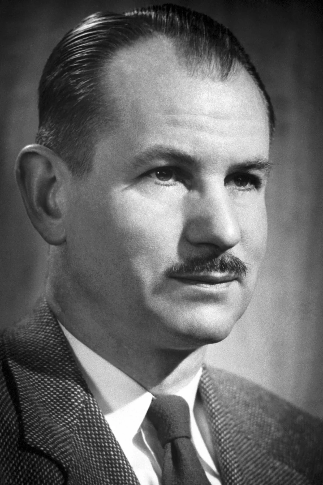
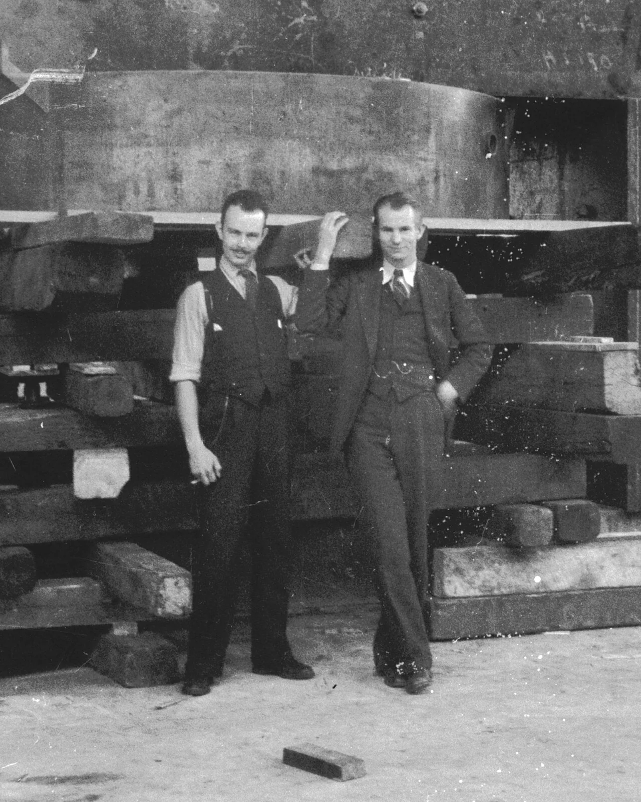
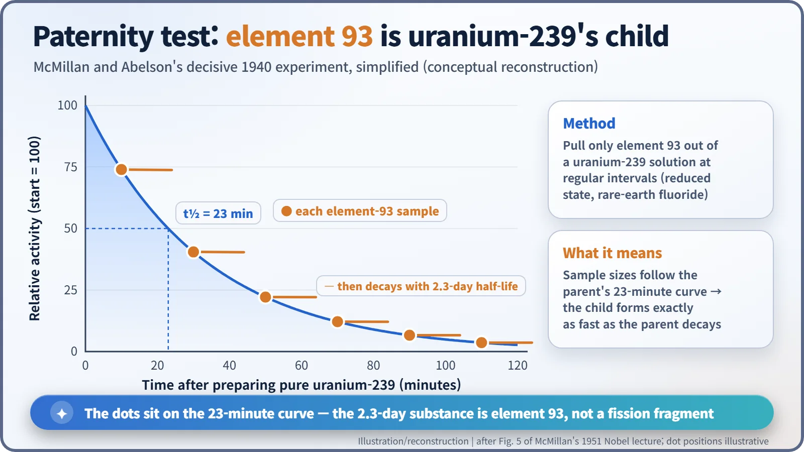
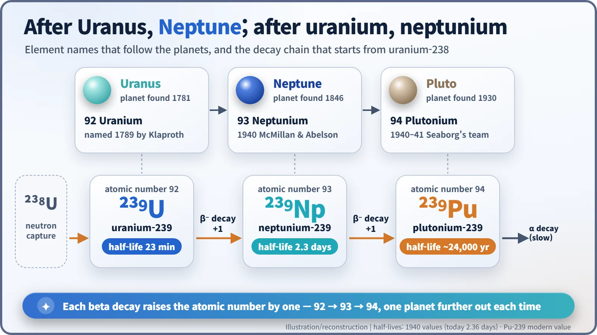
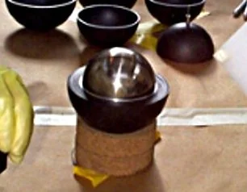

Nuclear History · 073
After Uranus Comes Neptune — McMillan and Abelson Discover Neptunium (1940)
A leftover radioactivity on a stack of cigarette papers, a rare-earth false alarm and a visiting friend's vacation led to the first real element beyond uranium.
In spring 1940 at Berkeley, Edwin McMillan and Philip Abelson proved that a puzzling 2.3-day radioactivity left behind in irradiated uranium was element 93, the first transuranium element ever identified. Named neptunium after the planet beyond Uranus, it arrived only after fission had unmasked six years of false "element 93" claims.
"I am not a chemist"
"At this point I started to do some chemistry, and in spite of what the Nobel Committee may think, I am not a chemist." Stockholm, 12 December 1951. The speaker was the physicist Edwin McMillan (1907–1991), giving his lecture as a winner of that year's Nobel Prize in Chemistry. It got a laugh, but the joke carried a whole story from eleven years earlier: a physicist fumbling his way into chemistry, and an old colleague who turned up on vacation and finished the job. Together they found neptunium, the first element heavier than uranium ever made and identified by human beings. [1]

Six years of false element 93s
Elements beyond uranium, number 92 in the periodic table, are called transuranium elements. In 1934 Enrico Fermi's team in Rome fired neutrons at uranium and reported that they might have made element 93. By his Nobel lecture in December 1938, Fermi could say that "we, in Rome, use to call the elements 93 and 94 Ausenium and Hesperium respectively." In Berlin, Otto Hahn, Lise Meitner and Fritz Strassmann chased a whole family of "transuranes" from 93 up to 96. [4]
Everyone expected element 93 to behave like rhenium, the element above that slot in the periodic table as it was then drawn. Then, in December 1938, Hahn and Strassmann found barium among their products, and the picture collapsed. Many of the supposed transuranium activities were really fragments of uranium nuclei that had split in two: fission products. After six years of searching, a genuine element 93 had never actually been identified.
What stayed behind on the paper
News of fission reached the Radiation Laboratory at Berkeley, California, early in 1939. McMillan picked a simple experiment: measure how far the fission fragments fly. He spread a thin layer of uranium oxide on a sheet of paper, stacked thin sheets of acid-washed cigarette paper on top like the pages of a book, and exposed the stack to neutrons from a cyclotron, Ernest Lawrence's circular particle accelerator. The fragments shoot off violently and lodge in the paper; how deep the radioactivity goes tells you how far they travelled. [1]
The interesting part was what did not fly. The bottom sheet holding the uranium showed a strong activity with a half-life of about 23 minutes and another of about two days. (A half-life is the time it takes for radioactivity to fall by half.) The 23-minute one matched uranium-239, discovered in Berlin in 1936: a nucleus that simply swallows a neutron does not recoil out of the layer. The two-day activity might then be its daughter, element 93.

The chemistry went to his colleague Emilio Segrè (1905–1989), who knew rhenium chemistry better than almost anyone. The verdict was disappointing. The 2.3-day substance looked nothing like rhenium and behaved instead like a rare earth. Rare earths are common among fission fragments, so the case seemed closed. Segrè published the result under the frank title "An Unsuccessful Search for Transuranium Elements." [1] [6]
A working vacation
McMillan could not let it go. Why would a single fission product behave so differently from all the others? Early in 1940 he went back to it. With a very thin catcher film he found that the substance travelled less than 0.1 mm of air, far too short for a fission fragment. So he began doing chemistry himself, which is where the "I am not a chemist" line comes from.
In spring 1940 Philip Abelson (1913–2004), a former Berkeley graduate student now at the Carnegie Institution of Washington, arrived "for a short vacation". It turned out he had been chasing the same 2.3-day substance on his own. They joined forces at once. [1]
The key was the oxidation state, roughly how many electrons an atom has given up. In its reduced form the substance came down with rare-earth fluorides; in its oxidised form it did not. That explained the erratic earlier results, and it was exactly how uranium behaves. Element 93 resembled its next-door neighbour, not the distant cousin, rhenium, that everyone had been checking.
The final proof was elegant. Starting from purified uranium-239, they pulled out element 93 again and again at intervals. The amount they got each time fell along the 23-minute curve of the parent. The child was being born exactly as fast as the parent decayed: a paternity test that settled the matter.

McMillan and Abelson sent "Radioactive Element 93" to Physical Review on 27 May 1940, and it appeared in the 15 June issue (volume 57, page 1185). McMillan later called Abelson's stay his "rather industrious 'vacation'." [2] [1]
Why Neptune?
The paper did not name the element. The name came soon afterwards. Uranium had been named in 1789 after Uranus, the planet discovered in 1781. The next planet out is Neptune, so element 93 became neptunium (Np). The name is generally credited to McMillan. [6]

The chain has one more link. Neptunium-239 beta-decays in turn into element 94. That autumn McMillan caught its first traces, but in November 1940 he left Berkeley to work on radar for national defence. The element that would be named after Pluto, plutonium, became Glenn Seaborg's story. [1]
Between openness and secrecy
According to a story often told, the British were unhappy that the neptunium paper had been published at all, but we could not find a documented source for it. What is certain is that the mood was changing. Around this time American physicists began holding back fission papers voluntarily, and the paper on element 94, submitted in January 1941, was not published until 1946. [5]
The irony is hard to miss. The real element 93 that everyone had been hunting since 1934 appeared only after fission had exposed the false ones. Today neptunium-237, with a half-life of about 2.14 million years, is one of the elements that matter in managing spent nuclear fuel. And in 1951 the physicist who insisted he was no chemist shared the Nobel Prize in Chemistry with Seaborg. [3]
